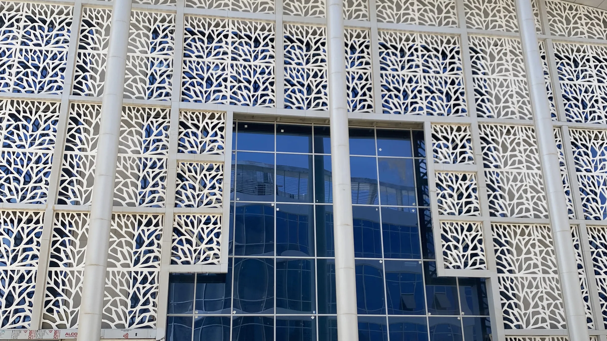
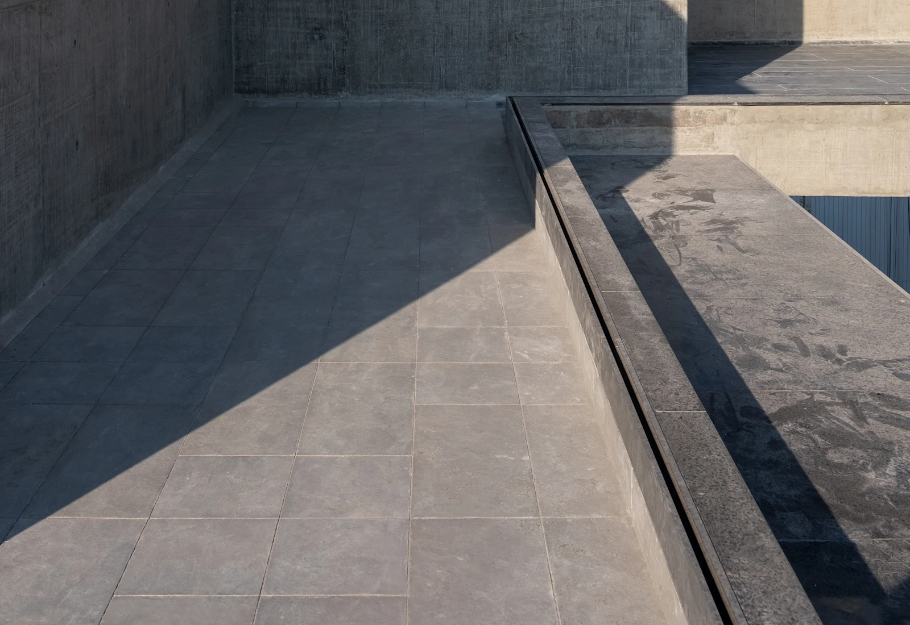
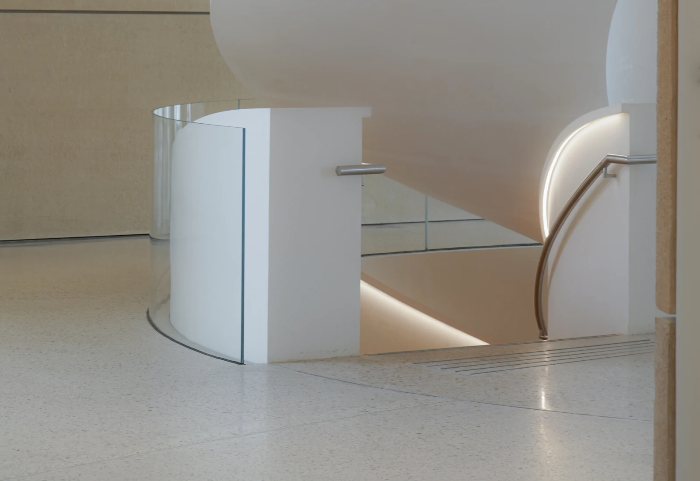
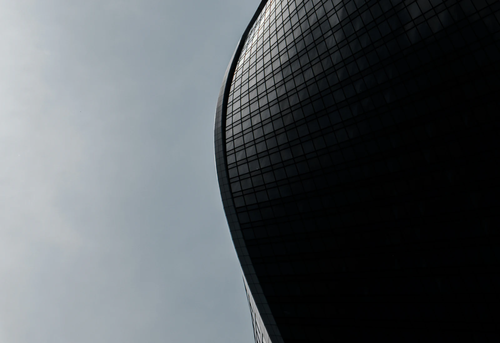
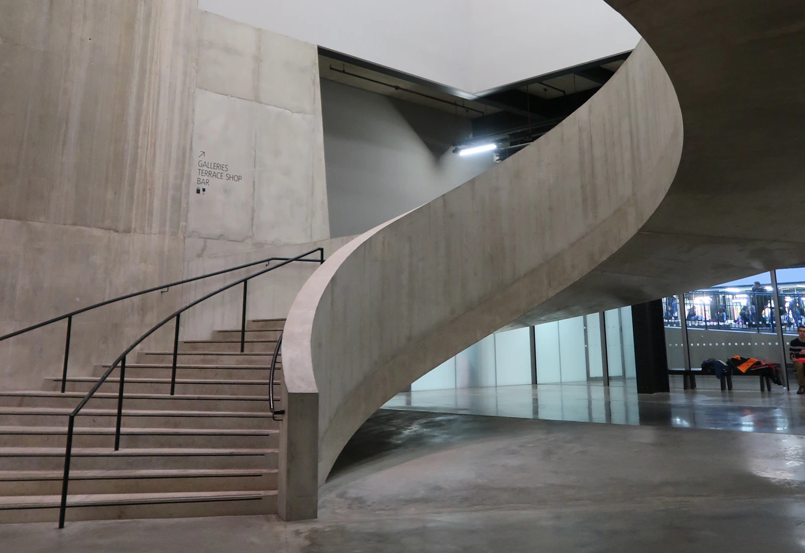

Materials Become Meaningful When They Become Architecture.
A selection of MarmoFiber applications across residential, commercial, hospitality and retail architecture.
01 — Selected Work
Selected projects.
06 projects
01
 Hospitality — Interior
Hospitality Interior
04
Hospitality — Interior
Hospitality Interior
04
 Retail — Interior
Retail Material Installation
06
Retail — Interior
Retail Material Installation
06

Residential — Interior & Exterior Contemporary Private Residence 02
Commercial — Custom Elements Commercial Entrance Feature 03
Hospitality — Interior
Hospitality Interior
04

Commercial — Façade Administrative Façade 05
Retail — Interior
Retail Material Installation
06

Custom Elements — Interior Feature Stair EnclosureProject records shown are representative placeholders prepared for this site. Names, locations and images will be replaced with confirmed project information as it is released for publication.
Your Project
Discuss a similar project.
Send the elevation, the interior or the element you are working on, and the stage the project is at. We will come back with a material route and a sampling plan.